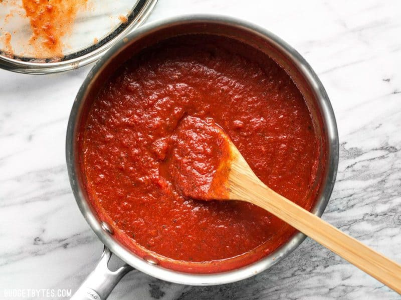

Image : Simply Recipes / Michelle Becker
5 mins
20 mins
25 mins
- 2 Tbsp olive oil
- 1 clove garlic, minced
- 15oz/420g crushed tomatoes
- 1/2 Tbsp sugar
- 1/2 Tbsp salt
- 1 tsp dried basil
- Freshly cracked black pepper
- 1 pinch crushed red pepper
1
Sauté one clove minced garlic in 2 Tbsp olive oil over medium heat for one to two minutes.
2
Add 15oz/420g crushed tomatoes, 1/2 Tbsp sugar, 1/2 tsp salt, 1 tsp dried basil, 1/2 tsp dried oregano, some freshly cracked pepper, and a pinch of red pepper flakes to the sauce pot.
3
Stir the ingredients together, place a lid on top, then allow it to come up to a simmer. Once simmering, turn the heat down to low and let it simmer for 15 minutes minimum.
4
And when you’re done, you’ll have a nice, hearty pizza sauce!